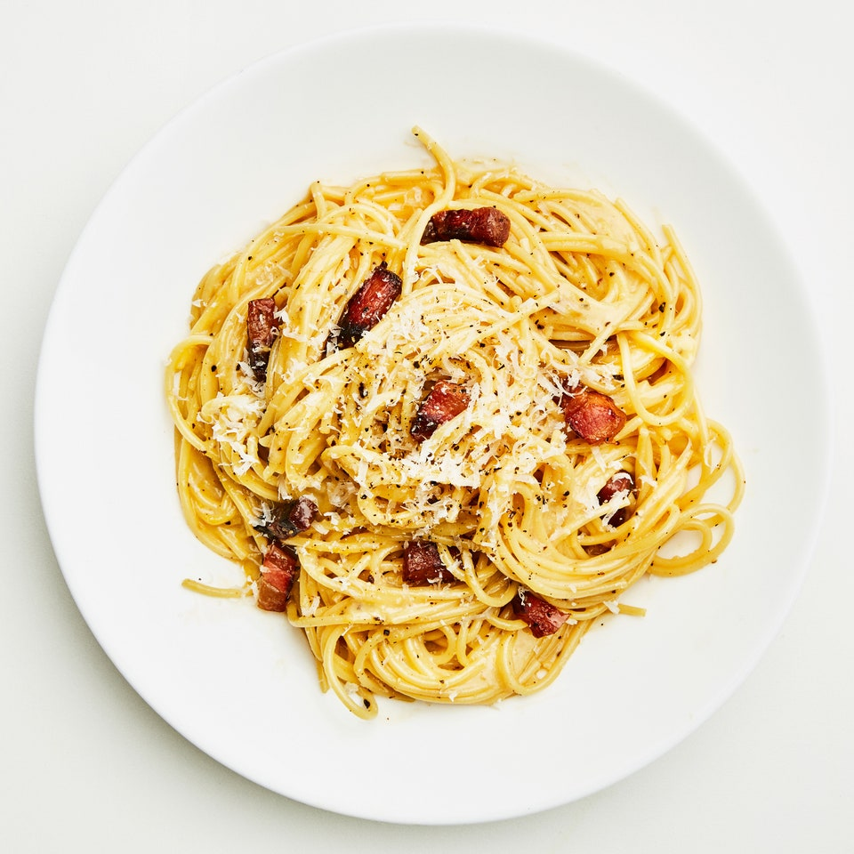

Killer Carbonara

Carbonara is a classic Italian pasta dish featuring spaghetti, eggs, Pecorino Romano cheese, pancetta or guanciale, and black pepper. It's known for its creamy, flavorful sauce and simple preparation.
Ingredients:
- 12 ounces (340g) spaghetti or any pasta of your choice
- 2 large eggs
- 1 cup grated Pecorino Romano cheese (or Parmesan)
- 3.5 ounces (100g) pancetta or guanciale, diced
- 2 cloves garlic, minced (optional)
- Freshly ground black pepper
- Salt (for pasta cooking water)
Recipe Instructions:
- Boil the Pasta: Bring a large pot of salted water to a boil. Cook the pasta according to package instructions until al dente. Reserve about 1 cup of pasta cooking water, then drain the pasta.
- Prepare the Sauce: In a bowl, whisk together the eggs, grated Pecorino Romano cheese, and a generous amount of freshly ground black pepper. Set aside.
- Cook the Pancetta/Guanciale: In a large skillet over medium heat, add the diced pancetta or guanciale. Cook until it becomes crispy and renders its fat, about 5-7 minutes. If desired, add minced garlic and sauté briefly until fragrant.
- Combine Pasta and Sauce: Add the cooked and drained pasta to the skillet with the pancetta or guanciale. Toss to combine, allowing the pasta to absorb some of the flavorful fat from the pork.
- Add the Egg Mixture: Remove the skillet from heat and quickly pour the egg and cheese mixture over the pasta. Toss vigorously to coat the pasta evenly. If the sauce seems too thick, add a bit of the reserved pasta cooking water gradually until you achieve your desired creaminess.
- Serve Immediately: Carbonara is best served right away, while it's still creamy and hot. Garnish with extra Pecorino Romano cheese and black pepper if desired.